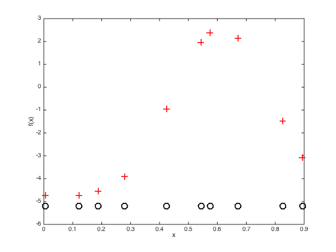
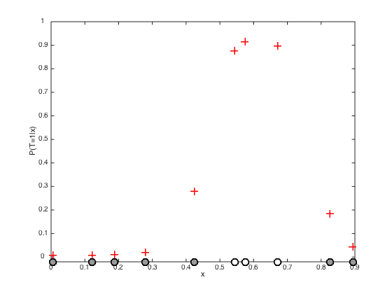
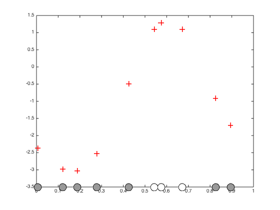
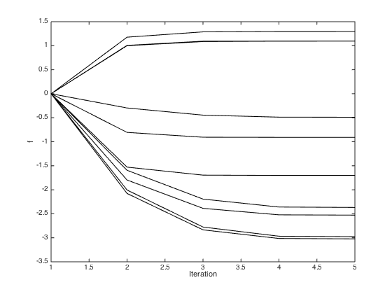
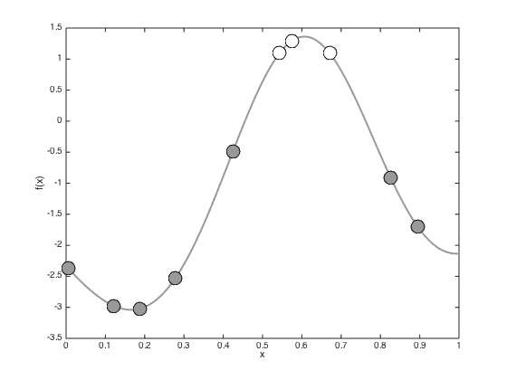
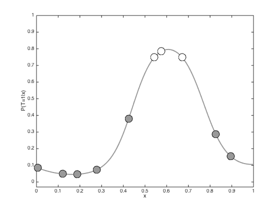
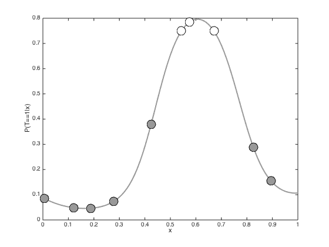
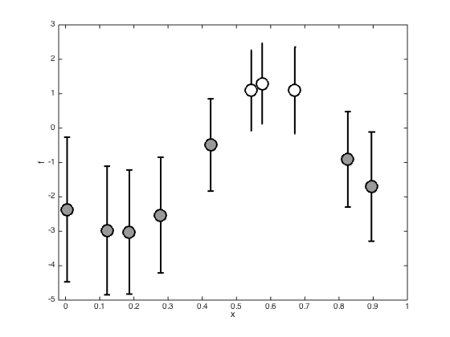
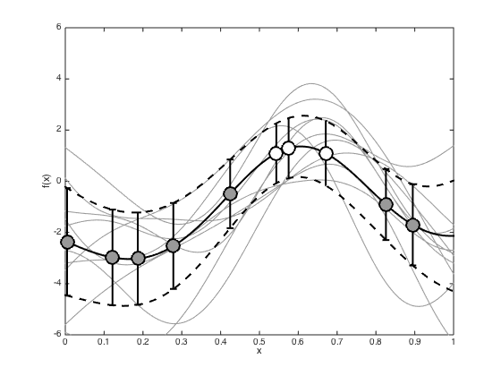
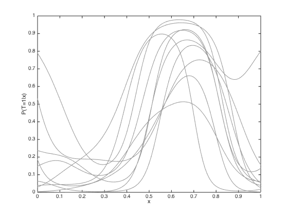

Contents
- gpclass.m
- Binary GP classification (1D) using the Laplace approximation
- Set the covariance parameters
- Compute the covariance matrix (training)
- Generative model - Figure 8.18 in book
- Inference of f
- Newton-Rapshon procedure for finding the MAP estimate of f
- Predictions with the point estimate
- Propogating uncertainty through the sigmoid function
- Plot the marginal posterior at the training points
- And the test predictions
gpclass.m
Performs binary GP classification with one dimensional data
From A First Course in Machine Learning Simon Rogers, August 2016 [simon.rogers@glasgow.ac.uk]
clear all; close all;
Binary GP classification (1D) using the Laplace approximation
clear all;close all; % If you don't want the exact data from the book, comment the rng line % and the two that slightly change x values rng(100); N = 10; x = rand(N,1); x = sort(x); x(3) = x(3) + 0.05; x(10) = x(10) + 0.05;
Set the covariance parameters
gamma = 10; alpha = 10;
Compute the covariance matrix (training)
for n = 1:N for m = 1:N C(n,m) = alpha*exp(-gamma*(x(n)-x(m))^2); end end
Generative model - Figure 8.18 in book
Change the rng parameter to get different datasets
rng(84) % Sample a function from the GP prior f = mvnrnd(repmat(0,N,1),C); figure(1); hold off; % Plot the realisations of the function plot(x,f,'r+','markersize',10,'linewidth',2) hold on xlabel('x') ylabel('f(x)') yl = ylim; yl(1) = yl(1) - 0.2; % Plot the data points along the x axis plot(x,repmat(yl(1),N,1),'ko','markersize',10,'linewidth',2) % Convert the function values to probabilities via a sigmoid function figure(2);hold off p = 1./(1+exp(-f)); % Plot the probabilities plot(x,p,'r+','markersize',10,'linewidth',2) ylim([-0.02 1]); yl = ylim; hold on % Get some random numbers u = rand(N,1); t = zeros(N,1); % Set the target class to 1 if the random value is less than the probability t(u<=p') = 1; % Plot the data agin, coloured according to class pos = find(t==0); plot(x(pos),repmat(yl(1),length(pos),1),'ko','markersize',10,'linewidth',2,'markerfacecolor',[0.6 0.6 0.6]); pos = find(t==1); plot(x(pos),repmat(yl(1),length(pos),1),'ko','markersize',10,'linewidth',2,'markerfacecolor',[1 1 1]); set(gca,'ytick',[0:0.1:1],'yticklabel',[0:0.1:1]) xlabel('x') ylabel('P(T=1|x)') 
Inference of f
We will start with a point estimate obtained through numerical optimisation
Newton-Rapshon procedure for finding the MAP estimate of f
Initialise f as a vector of zeros
f = zeros(N,1); % Pre-compute the inverse of C (for efficiency) invC = inv(C); % Newton-Raphson procedure (p.300) max_its = 10; it = 1; allf = zeros(max_its,N); allf(1,:) = f'; while it < max_its g = 1./(1+exp(-f)); gradient = -invC*f + t - g; hessian = -invC - diag(g.*(1-g)); f = f - inv(hessian)*gradient; it = it + 1; allf(it,:) = f'; end hessian = -invC - diag(g.*(1-g)); figure();hold off % Plot the inferred optimised f values plot(x,f,'r+','markersize',10,'linewidth',2) hold on % plot the data pos = find(t==0); yl = ylim; plot(x(pos),repmat(-3.5,length(pos),1),'ko','markersize',15,'markerfacecolor',[0.6 0.6 0.6]) pos = find(t==1); yl = ylim; plot(x(pos),repmat(-3.5,length(pos),1),'ko','markersize',15,'markerfacecolor',[1 1 1]) xlim([0 1]) % Plot the evolution of the f values through the optimisation figure(); plot(allf(1:5,:),'k') xlabel('Iteration'); ylabel('f'); 
Predictions with the point estimate
Define some test points for vidualisation and compute the test covariance
testx = [0:0.01:1]'; Ntest = length(testx); % Compute the required covariance functions for n = 1:N for m = 1:Ntest R(n,m) = alpha*exp(-gamma*(x(n)-testx(m))^2); end end for n = 1:Ntest for m = 1:Ntest Cstar(n,m) = alpha*exp(-gamma*(testx(n) - testx(m))^2); end end % Compute the latent function at the test points fs = R'*invC*f; % Plot the predictive latent function figure();hold off plot(testx,fs,'k','color',[0.6 0.6 0.6],'linewidth',2) hold on pos = find(t==0); yl = ylim; plot(x(pos),f(pos),'ko','markersize',15,'markerfacecolor',[0.6 0.6 0.6]) pos = find(t==1); plot(x(pos),f(pos),'ko','markersize',15,'markerfacecolor',[1 1 1]) xlabel('x') ylabel('f(x)') % Plot the predictive probabilities figure() hold off plot(testx,1./(1+exp(-fs)),'k','linewidth',2,'color',[0.6 0.6 0.6]) hold on pos = find(t==0); plot(x(pos),1./(1+exp(-f(pos))),'ko','markersize',15,'markerfacecolor',[0.6 0.6 0.6]) pos = find(t==1); plot(x(pos),1./(1+exp(-f(pos))),'ko','markersize',15,'markerfacecolor',[1 1 1]) ylim([-0.03 1]) xlabel('x') ylabel('P(T=1|x)') 
Propogating uncertainty through the sigmoid function
In the previous example, we simply pushed the predictive mean through the sigmoid function. We can also account for the predictive variance. Here we do this by generating lots of samples from the latent function, pushing them all through the sigmoid function and then taking the mean
% Comute the predictive variance predvar = diag(Cstar - R'*invC*R); % Watch out for really small values predvar(predvar<1e-6) = 1e-6; % Generare lots of samples and then average Nsamples = 10000; u = randn(Ntest,Nsamples).*repmat(sqrt(predvar),1,Nsamples) + repmat(fs,1,Nsamples); pavg = mean(1./(1+exp(-u)),2); % Plot the resulting predictive probabilities figure(); hold off plot(testx,pavg,'k','linewidth',2,'color',[0.6 0.6 0.6]) hold on pos = find(t==0); plot(x(pos),1./(1+exp(-f(pos))),'ko','markersize',15,'markerfacecolor',[0.6 0.6 0.6]) pos = find(t==1); plot(x(pos),1./(1+exp(-f(pos))),'ko','markersize',15,'markerfacecolor',[1 1 1]) xlabel('x') ylabel('P(T==1|x)')
Plot the marginal posterior at the training points
Plot the posterior of the latent variables at the training points (mean plus and minus standard deviation)
figure(); hold off % Compute the posterior covariance covf = -inv(hessian); post_sd = sqrt(diag(covf)); pos = find(t==0); errorbar(x(pos),f(pos),post_sd(pos),'ko','markersize',15,'markerfacecolor',[0.6 0.6 0.6],'linewidth',2) hold on pos = find(t==1); errorbar(x(pos),f(pos),post_sd(pos),'ko','markersize',15,'markerfacecolor',[1 1 1],'linewidth',2) xlim([-0.02 1]) xlabel('x') ylabel('f')
And the test predictions
Add the predictive mean and variance, and some samples to the plots.
% Compute the predictive mean and covariance pred_mu = R'*invC*f; pred_cov = Cstar - R'*(C\R) + R'*(C\covf)*invC*R; pred_cov = pred_cov + 1e-6*eye(Ntest); figure(); hold off % Sample some predictive functions and plot them samps = gausssamp(pred_mu,pred_cov,10); plot(testx,samps','k','color',[0.6 0.6 0.6]) hold on % Plot the predictive mean and variance plot(testx,pred_mu,'k','linewidth',2) sd = sqrt(diag(pred_cov)); plot(testx,pred_mu + sd,'k--','linewidth',2) plot(testx,pred_mu - sd,'k--','linewidth',2) % Plot the values at the data pos = find(t==0); errorbar(x(pos),f(pos),post_sd(pos),'ko','markersize',15,'markerfacecolor',[0.6 0.6 0.6],'linewidth',2) hold on pos = find(t==1); errorbar(x(pos),f(pos),post_sd(pos),'ko','markersize',15,'markerfacecolor',[1 1 1],'linewidth',2) xlim([0 1]); ylim([-6 6]); xlabel('x') ylabel('f(x)') % Turn each sample into a probability to plot figure() hold off plot(testx,1./(1+exp(-samps')),'k','color',[0.6 0.6 0.6]) ylim([0 1]) xlabel('x') ylabel('P(T=1|x)') 